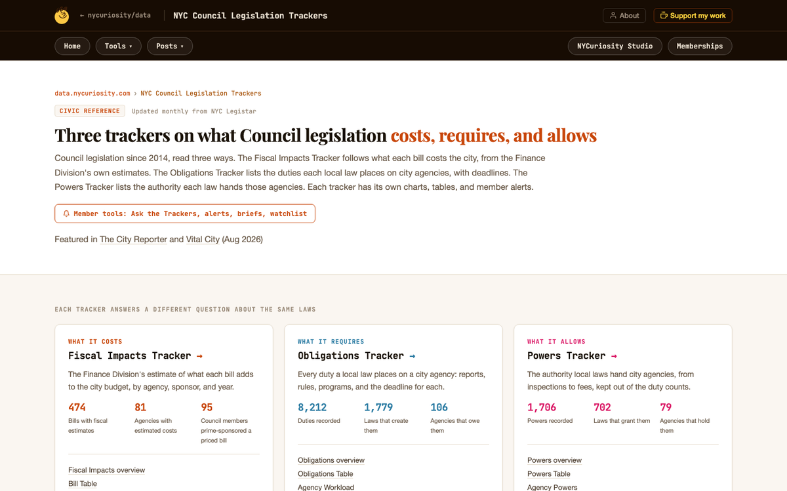
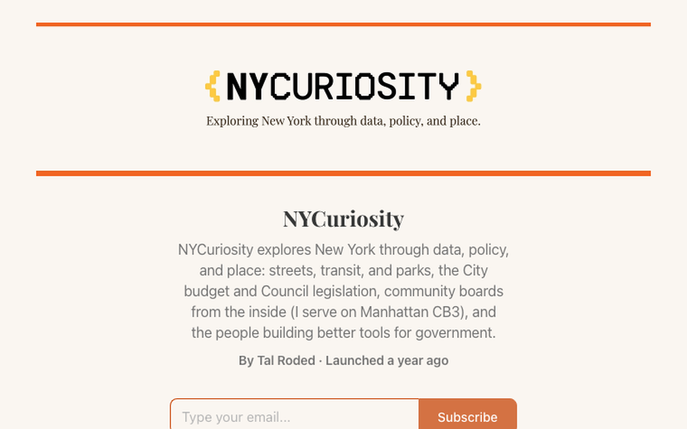
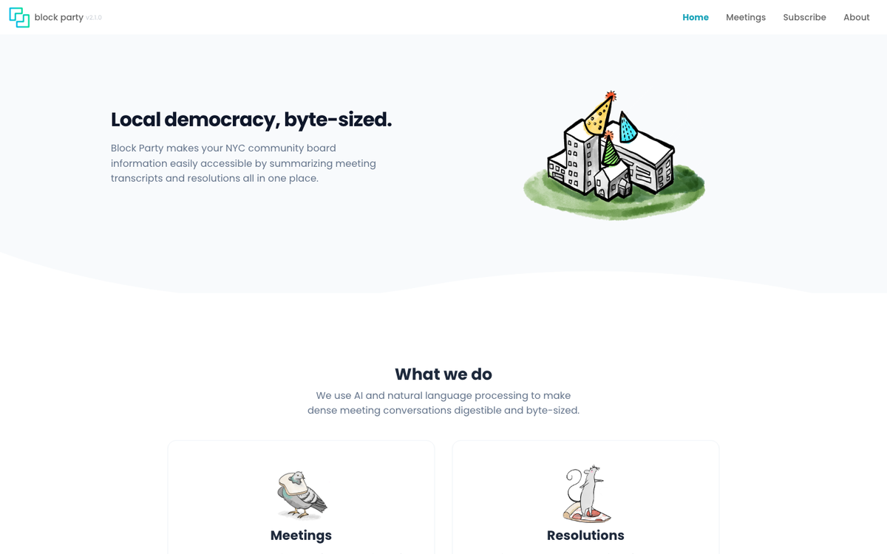
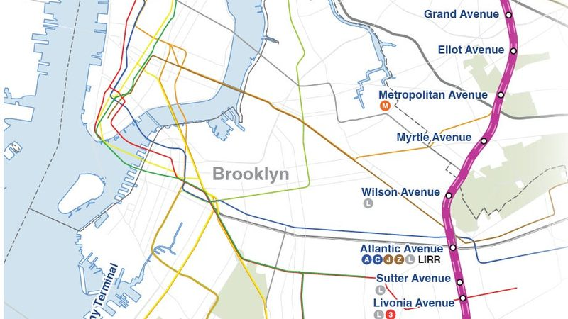
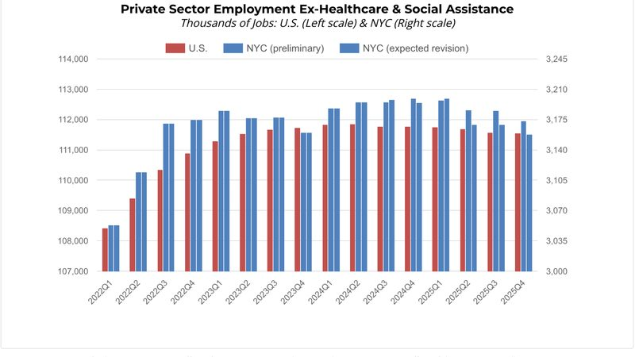
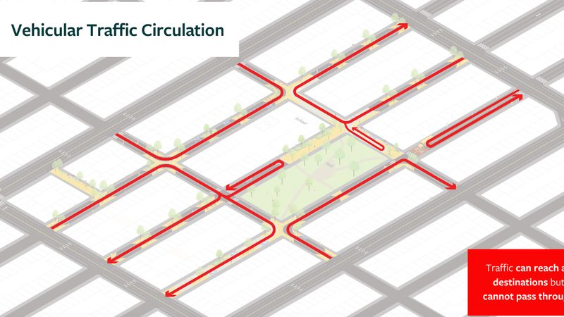
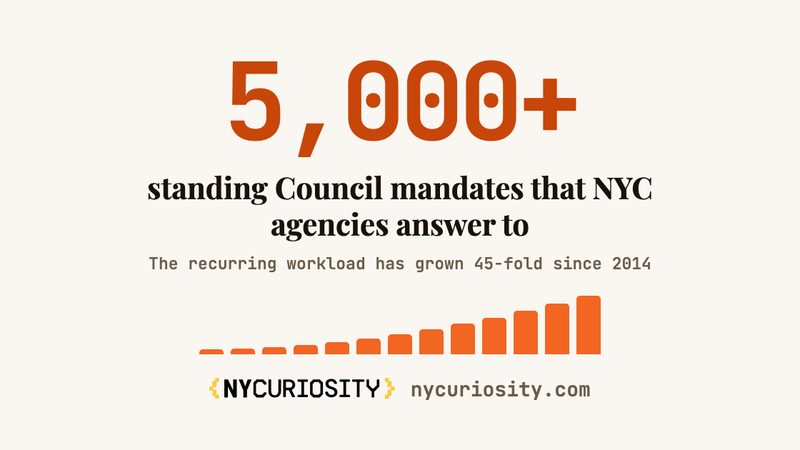
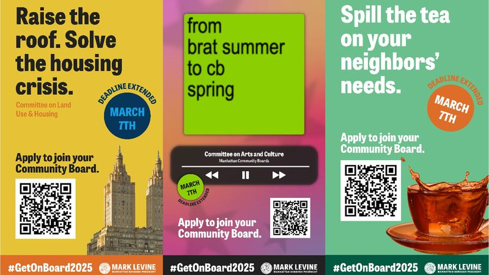
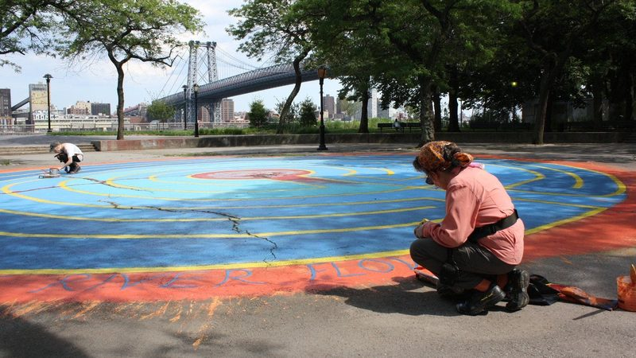

Maximum New York · Foundations of New York City
From posting to policy
Eighteen months of writing about how New York governs itself, in public, and what it opened up.
Tal Roded · NYCuriosity · Manhattan Community Board 3
 October 2026
October 2026Thank Daniel. One sentence on who I am: data scientist by day, I write NYCuriosity, I sit on Manhattan CB3. Today is the story of how the writing led to everything else, and what you can take from it.
March 2025
I started with a data job, a few questions about my own neighborhood, and no one in city government to ask.
- The questions were ordinary: were the new trash bins working, what does Manhattan give away by not charging for parking, why do the Council's laws cost what they cost.
- The data to answer them was public. Nobody had done the work.
- So I did it on nights and weekends and published everything: the chart, the dataset behind it, the code.

Be honest about the starting point: no policy degree then, no network, a Substack nobody read. The only asset was the ability to pull public data and explain it. Room of about 65, including people who work in government: say the pipeline works from inside an agency too.
The pipeline
It runs in one direction: post, build, get pulled in, then do the work from the inside.
Post
Answer one public question with public data. Show every chart and the dataset behind it.
Build
The dataset behind the post is worth more than the post. Publish it as a tool anyone can use.
Get pulled in
Readers inside government, the press and civic groups reach out. Talks, bylines, collaborations.
Work from inside
A board seat, hackathons with agencies, policy fellowships. The inside work feeds the next post.
This is the whole talk on one slide. The next four slides walk each stage with what actually happened and when. The arrow at the end loops back: everything I learn inside becomes the next post.
01 · Post
Posting works when the question has a knowable answer and the work is shown.
- Jun 2025The trash bin program. A year of 311 data on whether the bins changed anything on the block.
- May 2026"NYC Keeps Passing Laws It Can't Afford." Every fiscal impact statement the Council has filed since 2014, in one dataset. The post former NYC DOT Commissioner Polly Trottenberg forwarded to the agency's leadership.
- Jul 2026"Fourteen Ways to Make NYC Community Boards Work Better." Written from inside a board, with the Civic Engagement Commission's data.
- Sep 2026The charter commission post. What the ballot questions change, agency by agency.
- Specific beats broad. One law, one station, one board. A finding with a number gets forwarded; a take does not.
- Every post carries its data. Readers in agencies check the numbers before they reply, and they reply because they can.
- Covered by The City Reporter, Vital City and EV Grieve; reprinted or cited by the Manhattan Institute, Streetsblog and Searchlight.
Pick two of the four to tell as stories; the unfunded mandates post is the one that proves the pipeline, because a former DOT commissioner read it and forwarded it to the agency's leadership within four days. Method, if asked: AI pulls and parses the data, I check its work, it never writes my conclusions.
02 · Build
The dataset behind a post is worth more than the post, so I publish it as a tool.
Every number audited before it ships. A profile for every agency and council member, and an assistant that answers with the source law attached.
Built with Block Party's founder after she read the Substack. Refreshed every Sunday. The board's memory survives the 2027 term limits.
Say it out loud: AI collapsed the build time. One person can now ship what used to take a team a year. The hard parts are the ones government still has: procurement, security review, maintenance. If there is time, pull up one tracker page live. The tool is the business card: agency staff share a tool with colleagues in a way they never share an op-ed.
What the work looks like
One Substack, two open tools, all public.



No live demo. Point at each: the Substack is where the questions get asked; the trackers and Block Party are where the answers live so other people can use them.
03 · Get pulled in
Readers inside government, the press and civic groups started reaching out.
- Jan 2026Block Party's founder read the Substack and emailed. By March we were presenting together at NYC School of Data, and in July the NYC OMB Institute asked us in.
- May 2026Former NYC DOT Commissioner Polly Trottenberg read the unfunded mandates post and introduced me to the agency's First Deputy Commissioner.
- Jun–Aug 2026Editors at Vital City, Streetsblog, Reboot Democracy, Searchlight and the Manhattan Institute wrote to ask for pieces after reading the posts.
- 2026Abundance New York and Open Plans asked me to speak and share ideas; Harvard Kennedy School's Responsive Cities sprint invited me after the Block Party work reached them.
- Sep 2026The one I applied for: the main stage at CivStart's State of GovTech in Washington. Everything else on this slide came to me.
The point for the class: one of these was an application. The posts did the rest of the applying. Name Sarah Sachs and Polly Trottenberg out loud if it feels right in the room; the slide keeps roles.
The posts that traveled · streets, transit and the economy
The most-read posts answered one question each, with the data attached.

The Interborough Express Might Be NYC's Best Transit Investment in Decades
Feb 2026
The most-read post. Updated with a video in September 2026.
Manhattan Should Charge for Parking
Aug 2025
The post that opened the conversation with former NYC DOT Commissioner Polly Trottenberg, who loved the idea and doubted any commissioner would survive it.

NYC's Job Growth Has a Quality Problem
Mar 2026
Ran in Vital City in June 2026.

A Blueprint for Safer, Quieter Streets in NYC
Nov 2025
Became the Streetsblog op-ed on a Clinton Street low-traffic neighborhood, July 2026.
Each of these is a question a reader could have asked at a community board meeting, answered with public data and every chart open. The audience is modest in size. What these posts did was reach the right people.
The posts that traveled · how government works
Posts about how the city actually runs found readers inside it.

NYC Agencies Answer to Over 5,000 Standing Council Mandates
Aug 2026
Launched the Obligations Tracker. Covered by The City Reporter and Vital City; became a Searchlight column.
NYC's Civil Service System Is Broken. Here's What Mayor-Elect Mamdani Can Do.
Dec 2025
Written in the transition, before the new administration took office.

Demystifying NYC Community Boards, Part I
Dec 2025
Grew into a five-part guide. Abundance New York asked to use it for new board members.

December Parks Committee Report for Manhattan CB3
Dec 2025
A committee report from inside the board, in the top ten. People want to know what their board did.
The CB3 report is the surprise: a plain monthly report of what a committee did out-performs most analysis pieces, because nobody else publishes it. That is the gap the board guides and Block Party fill.
04 · Work from inside
Inside and outside at once: the board gives me questions, the posts give the board data.
Appointed May 2025, with advice from readers
Readers coached me on applying and on the job itself. Posting from inside has brought the Mayor's Office, borough presidents' offices, other board members and applicants. It has also meant an hour on which way a park bench should face, and getting called out for the reports.
Co-organized with people I met through the work
A directory of 334 organizations working on government effectiveness, and two hackathons in 2026: prototypes for three mayoral priorities in June, and a public engagement hackathon at CUNY in September.
By the time you read about a policy, it's late
Daniel's point. The board is where you see the liquor license, the street redesign and the budget request months before the article. Being there makes the next post early instead of reactive.
Tie to Daniel's thesis explicitly. The board seat is unpaid and the work is unglamorous, and it is the single best source of questions I have. Stories, pick two: the hour-long debate on whether a park bench faces the playground or the street; the vote on a zoning map change to recognize that a stretch of the Allen Street median is already a park (not to create one), so Parks could renovate the building in it; being called out for writing the CB reports as the board went to a vote on firing an assistant district manager. Then the monthly reports, the AI review of a full meeting, the scorecard from 2,409 recordings.
What the writing turned into
Four projects grew out of the posts, and each has its own team and momentum now.
Community board records, searchable
From: Block Party's founder reading the Substack, Jan 2026
I built the resolution engine behind it: 27 boards, 40,000+ resolutions back to 2002, about 12,000 transcripts, refreshed weekly, three more boroughs underway.
What every law costs, requires and allows
From: the fiscal impact and unfunded mandates posts
2,158 local laws since 2014; 8,200+ agency duties, 1,700+ powers, 474 fiscal statements; alerts and an assistant that cites the law. A New York State version started this month.
A field, a directory and hackathons
From: conversations with people who wanted government to work better
With three people I met through the work: a directory of 334 organizations, a Slack community, and two hackathons in 2026 that built working prototypes in a day.
Tools for the boards themselves
From: "Fourteen Ways to Make NYC Community Boards Work Better," Jul 2026
A member and term-limit tracker for all 59 boards, a Robert's Rules helper, an AI review of a full meeting, and a scorecard of meeting lengths from 2,409 recordings.
The point of this slide: none of these were planned. Each came out of a conversation the writing started, with a person who then became a collaborator. The lesson that follows is "talk to people."
What I'd tell you to do
Seven things that turned posting into policy work.
- Pick a question with a knowable answer, then answer it completely. The data is public. The work is what's missing.
- Talk to people. Write to the agency staffer, the Council aide, the advocacy partner, the engaged neighbor, and ask for a conversation. Every project on the previous slide started as one.
- Go specific. One law, one station, one board. Broad takes have no audience; specific findings get forwarded.
- Build the thing you wish existed. With today's AI tools a one-person shop can ship a real tool in weeks.
- Join an institution while you post. A community board, a student group, a hackathon. Inside gives you questions and standing; outside gives you reach.
- Answer every email. The pipeline is inbound. Each reply is the next collaboration.
- Keep the cadence. 74 posts in 18 months. People find the archive when they search, and the archive is what makes them write.
This is the closing slide before thanks: end on the ask that they pick one of these and do it before the next class. Say which two of these you'd have skipped and regretted. [TAL: still your call which lessons stay; this is the draft list.]
Thank you
Come find the work, and write to me.
- Writing: nycuriosity.com
- Tools and data: data.nycuriosity.com
- Community board records: blockparty.studio
- State Capacity Ecosystem: statecapacityecosystem.com
- Email: tal@nycuriosity.com
Tal Roded · October 2026Leave this up during questions.